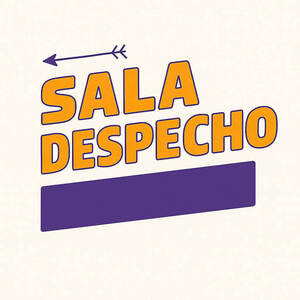

Trade Mark Journal No.2025/024 13 June 2025
UK00004208706 24 May 2025 (41)

Kareoke
- Class 41
- Entertainment services; Entertainment services in the nature of organizing social entertainment events; Ticket procurement services for entertainment events; Entertainment services in the nature of arranging social entertainment events; Corporate entertainment services; Organisation of entertainment services; Interactive entertainment services; Music entertainment services; Hospitality services (entertainment); Ticket information services for entertainment events; Cabaret entertainment services; Entertainment club services; Club entertainment services; Club services [entertainment]; Musical entertainment services; Entertainment services in the nature of competitions; Entertainment services relating to esports; Nightclub services [entertainment]; Entertainment booking services; Audio entertainment services; Live entertainment services; Video entertainment services; Education, entertainment and sport services; Ticket reservation and booking services for education, entertainment and sports activities and events; Entertainment agency services; Entertainment information services; Provision of club entertainment services; Popular entertainment services; Exhibition services for entertainment purposes; Organisation of entertainment events; Entertainment services relating to competitions; Entertainment services relating to sport; Radio entertainment services; Social club services for entertainment purposes; Educational and entertainment services, namely, providing motivational speaking services; Musical group entertainment services; Consultancy services in the field of entertainment; Live entertainment production services; Organization of entertainment events; Ticket agency services [entertainment]; Entertainment ticket agency services; Organisation of entertainment and cultural events; Rental services relating to equipment and facilities for education, entertainment, sports and culture; Entertainment services in the form of concert performances; Ticketing and event booking services; Entertainment services in the nature of a wrestling club; Booking of sports personalities for events (services of a promoter); Advisory services relating to entertainment; Cinematographic entertainment services; Night club services [entertainment]; Multimedia entertainment software publishing services; Music festival services; Entertainment services provided during intervals at sports events; Entertainment services in the form of cinema performances; Ticket information services for esports events; Entertainment services in the nature of interactive television programmes; Entertainment in the form of television programmes (Services providing -); Ticket information services for sporting events; Entertainment services relating to quizzes; Entertainment, education and instruction services; Entertainment services in the form of television programmes; Cultural services; Sporting education services; Music competition services; Sound engineering services for events; Entertainer services; Entertainment services in the form of musical group performances; Fan club services (entertainment); Services for the production of entertainment in the form of video; Road shows being entertainment services; Services for the organisation of football events; Entertainment services provided for children; Conducting of entertainment events; Wine tastings [entertainment services]; Animated musical entertainment services; Entertainment services provided in virtual environments; Organising events for entertainment purposes; Presentation of live entertainment events; Cultural, educational or entertainment services provided by art galleries; On-line ticket agency services for entertainment purposes; Entertainment in the form of recorded music (Services providing -); Business training services; Music performance services; Entertainment services sharing computer games.
Francisco Joaquin Valenzuela Ortiz